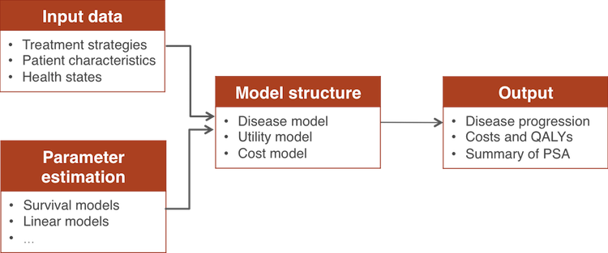

Introduction to hesim
2018-07-31
Overview
hesim is designed to facilitate the development of high performance health-economic simulation models and the analysis of the output of said models. A decision model is built by specifying a model structure, which consists of three submodels that are each a function of parameters and input data: a set of statistical models for predicting or simulating disease progression, a model for utility values, and set of cost models for each potential cost category (e.g., costs of medical care, drug costs). The disease model is used to model the probability of being in given disease state and the utility and costs models are used to model the costs and utility associated with a health state.

Probabilistic sensitivity analysis (PSA) is supported by default, as all modeled outcomes are based on sampled values of the parameters from appropriate probability distributions or via bootstrapping. Furthermore, predictions and simulations are made by patient according to the patient level covariates contained in the input data. hesim therefore also provides functions for decision analysis and quantifying the output of a PSA at the individual or subgroup level.
Model structure
The statistical models comprising a model structure are characterized by a distribution over outcomes, \(y\), which depend on model parameters, \(\alpha_1, \ldots, \alpha_L\),
\[ \begin{aligned} P(y| \alpha_1(x_1), \ldots, \alpha_L(x_L)). \end{aligned} \] The \(l\)th model parameter can depend on a vector of coefficients, \(\beta_l\), and an input vector, \(x_l\), of covariates through linked transformed linear models \(g(\alpha_l(x_l)) = x_l^T \beta_l\). The outcomes, \(y\), can be predicted using the mean of the distribution, \(E(y|\cdot)\), or sampled with a random draw from the probability distribution, \(P(y|\cdot)\).
Parameter estimates
In hesim, the sampled values of the coefficients for each parameter are generally stored in matrices (or a single matrix if the model only has one parameter), where the columns of each matrix are covariates and the rows are random samples. Parameters for statistical models are stored in objects prefixed by params_ (e.g., params_surv for a survival model, params_lm for a linear model). A params_ prefixed object can be created in one of two ways:
- With a function of the same name such as
params_surv()orparams_lm() - By using the generic function
form_params()to create objects from fitted statistical models
This flexibility is provided so that parameters can either be estimated using models fit with R or from an external source. To illustrate, consider the shape and scale parameters of a Weibull survival model, which are stored in a params_surv object (note that hesim accepts Weibull distributions by the name “weibull” or “weibull.quiet”).
library("hesim")
library("flexsurv")
n_samples <- 3
# Create from fitted R model
fit_wei <- flexsurv::flexsurvreg(formula = Surv(endpoint1_time, endpoint1_status) ~ female + age,
data = psm4_exdata$survival, dist = "weibull")
params_wei <- form_params(fit_wei, n = n_samples)
print(params_wei)## $coefs
## $coefs$shape
## shape
## [1,] 0.006250311
## [2,] -0.018077222
## [3,] 0.004109791
##
## $coefs$scale
## scale female age
## [1,] 0.115181289 0.01837421 -0.011639719
## [2,] 0.007184413 0.02002054 -0.009552147
## [3,] -0.082911291 0.04387777 -0.008704664
##
##
## $dist
## [1] "weibull.quiet"
##
## $n_samples
## [1] 3
##
## attr(,"class")
## [1] "params_surv"# Create with 'params_surv()'
coefs <- flexsurv::normboot.flexsurvreg(fit_wei, B = n_samples, raw = TRUE)
params_wei2 <- params_surv(coefs = list(shape = coefs[, "shape", drop = FALSE],
scale = coefs[, c("scale", "female", "age")]),
dist = "weibull")
print(params_wei2)## $coefs
## $coefs$shape
## shape
## [1,] 0.9848863
## [2,] 0.9617600
## [3,] 0.9575753
##
## $coefs$scale
## scale female age
## [1,] 0.9454106 -0.001026917 -0.009022109
## [2,] 0.8436234 -0.032737409 -0.006447188
## [3,] 1.1199931 0.023232793 -0.012006682
##
##
## $dist
## [1] "weibull"
##
## $n_samples
## [1] 3
##
## attr(,"class")
## [1] "params_surv"Input data
The input vectors for each parameter, \(x_{l,hijk}\), are rows in multidimensional input matrices, \(X_l\), where each row denotes a unique observation. The input matrix for parameter \(l\) is indexed by health-related indices, \(h\), patients, \(i\), and treatment lines \(j\) for a treatment strategy \(k\). Example health-related indices include a health state, a transition between two health states, or a survival endpoint in a partitioned survival model (PSM). In some cases, the health-related index \(h\) can be suppressed and separate models can be fit for each health index. This is, for instance, the case in a PSM where separate models are fit for each survival endpoint. Likewise, models can be fit without multiple treatment lines as would, again, be the case in a PSM where sequential treatment would be incorporated by adding additional health states.
In hesim, simulations are made by constructing an object of class input_data with the function input_data(), which consists of an input matrix \(X\) and the indices \(h\), \(i\), \(j\), and \(k\). We illustrate in the figure below with an example in which a statistical model with one parameter is used to make predictions across two treatment strategies, two patients, and two health states. (If a statistical model with more than one parameter were used, then a separate input matrix would need to be created for each parameter.)

hesim provides helper functions for constructing objects of class input_data. Specifically, an input_data object can be created by following a three step process.
- Using
hesim_data()to create a collection of data tables (i.e., adata.frameordata.table) of classhesim_datafor storing relevant simulation data (e.g., a treatment strategy table, a patient table, a health state table), which would contain any variables needed for prediction with a statistical model - Using
expand_hesim_data()to combine some or all of the tables created byhesim_data()into a single long dataset of classexpanded_hesim_datawith dimensions required for predicting or simulating values with a particular submodel - Using the dataset in Step 2 to create an object of class
input_datawithform_input_data()
The figure below illustrated this process using the same example above with two treatment strategies, two patients, and two health states.

To illustrate with R, consider a simple PSM where the only survival endpoint is overall survival, so that there is only one (non-death) health state. Furthermore, suppose that there are two treatment strategies and two patients. A hesim_data object can be created as follows.
dt_strategies <- data.frame(strategy_id = c(1, 2))
dt_patients <- data.frame(patient_id = seq(1, 2),
age = c(45, 50),
female = c(0, 1))
dt_states <- data.frame(state_id = 1,
state_name = "Alive",
stringsAsFactors = FALSE)
hesim_dat <- hesim_data(strategies = dt_strategies,
patients = dt_patients,
states = dt_states)
print(hesim_dat)## $strategies
## strategy_id
## 1 1
## 2 2
##
## $patients
## patient_id age female
## 1 1 45 0
## 2 2 50 1
##
## $states
## state_id state_name
## 1 1 Alive
##
## attr(,"class")
## [1] "hesim_data"The hesim_data object can subsequently be “expanded” over the dimensions of interest using expand_hesim_data(). The new expanded_hesim_data object must contain the covariates used in the model fit as well as id variables indexing the dimensions of the data. Given a model object or formula, we extract the input matrix from the expanded_hesim_data object using the generic function form_input_data(), which returns an input_data object containing the input matrix as well as the relevant id variables.
As with parameter estimation, an input_data object can be created in one of two ways:
- From a model fit using R
- Based on the covariates from a model fit outside of
R
In case 2 a formula or formula_list object can be used in lieu of a fitted model. To illustrate, suppose we would like to predict survival curves by treatment strategy and patient using our fitted Weibull model. We first expand our hesim_data object using the strategies and patients tables so that we have a dataset where each row is a unique treatment strategy and patient. We then use form_input_data() to create (i) a model matrix, X, for each parameter (the shape parameter only includes an intercept while the scale parameter includes an age covariate and a dummy variable for gender) and (ii) strategy_id and patient_id variables indicating the strategy and patient represented by each row in the list of matrices. In addition, the number of unique strategies and patients being modeled are returned based on the id variables specified.
# Predict survival curves by treatment strategy and patient
## From a model fit with flexsurvreg
hesim_edata_surv <- expand_hesim_data(hesim_dat, by = c("strategies", "patients"))
input_dat_wei <- form_input_data(fit_wei, data = hesim_edata_surv)
print(input_dat_wei)## $X
## $X$shape
## (Intercept)
## 1 1
## 2 1
## 3 1
## 4 1
## attr(,"assign")
## [1] 0
##
## $X$scale
## (Intercept) female age
## 1 1 0 45
## 2 1 1 50
## 3 1 0 45
## 4 1 1 50
## attr(,"assign")
## [1] 0 1 2
##
##
## $strategy_id
## [1] 1 1 2 2
##
## $n_strategies
## [1] 2
##
## $patient_id
## [1] 1 2 1 2
##
## $n_patients
## [1] 2
##
## attr(,"class")
## [1] "input_data"## From a formula object
formula_list_wei <- formula_list(shape = ~1,
scale = ~ female + age)
input_dat_wei2 <- form_input_data(formula_list_wei, data = hesim_edata_surv)We can create input data to make predictions by treatment strategy, patient, and health state (e.g., for our utility and cost models) in a similar fashion.
# Predict (mean) state values by treatment strategy, patient, and health state
hesim_edata_statevals <- expand_hesim_data(hesim_dat, by = c("strategies", "patients", "states"))
formula_costs <- formula_list(mu = ~ 1 + female)
print(form_input_data(formula_costs, data = hesim_edata_statevals))## $X
## $X$mu
## (Intercept) female
## 1 1 0
## 2 1 1
## 3 1 0
## 4 1 1
## attr(,"assign")
## [1] 0 1
##
##
## $strategy_id
## [1] 1 1 2 2
##
## $n_strategies
## [1] 2
##
## $patient_id
## [1] 1 2 1 2
##
## $n_patients
## [1] 2
##
## $state_id
## [1] 1 1 1 1
##
## $n_states
## [1] 1
##
## attr(,"class")
## [1] "input_data"Running a simulation
A decision model is created by combining the disease, utility, and cost models. Each submodel is, in turn, created by combining input data and parameter estimates. For example, in a PSM there are three submodels: a set of survival models, a utility model, and a set of cost models for different types of costs. The survival models are R6 objects of class PsmCurves and used to predict the survival curves in a PSM. The cost and utility models are R6 objects of class StateValues and used to predict the values to assign to the health states.
Again, as with the model parameters and input data, there are two ways to instantiate each submodel:
- Based on parameters and input data using
$new() - From fitted statistical models using generic functions prefixed by
form_(e.g.,form_PsmCurves(),form_StateVals()).
We illustrate by instantiating a PsmCurves object in both ways.
# Instantiate from a 'partsurvfit' object
psfit_wei <- partsurvfit(flexsurvreg_list(fit_wei), data = psm4_exdata$survival)
psm_curves <- form_PsmCurves(psfit_wei, data = hesim_edata_surv,
n = n_samples, bootstrap = FALSE)
# Instantiate with $new()
params_wei_list <- params_surv_list(params_wei)
input_dat_wei_list <- form_input_data(formula_list(formula_list_wei),
data = hesim_edata_surv)
psm_curves2 <- PsmCurves$new(params = params_surv_list(params_wei),
data = input_dat_wei_list)Submodels such as PsmCurves have a number of member functions that can be used for prediction, simulation, or to evaluate model fit. For example, we can summarize survival curves from a PsmCurves object with functions to predict hazards, cumulative hazards, survival, restricted mean survival time, and quantiles.
psm_wei <- partsurvfit(flexsurvreg_list(fit_wei), data = psm4_exdata$survival)
psm_curves <- form_PsmCurves(psm_wei, data = hesim_edata_surv,
n = n_samples, bootstrap = FALSE)
head(psm_curves$quantile(.5))## curve sample strategy_id patient_id p quantile
## 1: 1 1 1 1 0.5 0.4659789
## 2: 1 1 1 2 0.5 0.4578204
## 3: 1 1 2 1 0.5 0.4659789
## 4: 1 1 2 2 0.5 0.4578204
## 5: 1 2 1 1 0.5 0.4470714
## 6: 1 2 1 2 0.5 0.4251734head(psm_curves$cumhazard(t = seq(0, 3)))## curve sample strategy_id patient_id t cumhazard
## 1: 1 1 1 1 0 0.000000
## 2: 1 1 1 1 1 1.488810
## 3: 1 1 1 1 2 2.979985
## 4: 1 1 1 1 3 4.472055
## 5: 1 1 1 2 0 0.000000
## 6: 1 1 1 2 1 1.515372head(psm_curves$rmst(t = 3))## curve sample strategy_id patient_id t rmst
## 1: 1 1 1 1 3 0.6640057
## 2: 1 1 1 2 3 0.6529567
## 3: 1 1 2 1 3 0.6640057
## 4: 1 1 2 2 3 0.6529567
## 5: 1 2 1 1 3 0.6513649
## 6: 1 2 1 2 3 0.6210612We can instantiate a StateVals object in the same two ways, although here we only use the second method. A $simulate() function is available to simulate state values by treatment strategy, patient, and health state.
medcost_dat <- subset(psm4_exdata$costs$medical, state_name == "state3")
medcosts_fit <- stats::lm(costs ~ female, data = medcost_dat)
psm_medcosts <- form_StateVals(medcosts_fit,
data = hesim_edata_statevals, n = n_samples)
head(psm_medcosts$sim(t = 3, type = "predict"))## state_id sample strategy_id patient_id time value
## 1: 1 1 1 1 3 34333.96
## 2: 1 1 1 2 3 36210.80
## 3: 1 1 2 1 3 34333.96
## 4: 1 1 2 2 3 36210.80
## 5: 1 2 1 1 3 34568.19
## 6: 1 2 1 2 3 35151.27By combining submodels, a decision model is able to simulate disease progression and cost and utility values associated with each disease state. Total discounted costs and QALYs are calculated by summing (or integrating) simulated costs and utility over time. In the PSM example, disease progression is simulated by first generating survival curves and then calculating health states probabilities based on those curves. Cost and QALYs are calculated by numerically integrating the weighted probability of being in each state, where weights are a function of the discount factorand predicted state values.
times <- seq(0, 3, .01)
psm <- Psm$new(survival_models = psm_curves,
cost_models = list(medical = psm_medcosts))
psm$sim_survival(t = times)
psm$sim_stateprobs()
psm$sim_costs(dr = c(0, .03))
head(psm$costs_)## state_id sample strategy_id patient_id dr category costs
## 1: 1 1 1 1 0 medical 22798.36
## 2: 1 1 1 2 0 medical 23644.54
## 3: 1 1 2 1 0 medical 22798.36
## 4: 1 1 2 2 0 medical 23644.54
## 5: 1 2 1 1 0 medical 22517.03
## 6: 1 2 1 2 0 medical 21831.64Decision analysis
Once costs and QALYS have been calculated, the PSA output can be summarized with measures commonly used for technology assessment including:
- cost-effectiveness planes
- cost-effectiveness acceptability curves (CEACs)
- the expected value of perfect information (EVPI)
Moreover, since patient level outcomes are modeled, output can be summarized by patient or subgroup. These “individualized cost-effectiveness analyses” are performed with the icea() function. A detailed explanation is given here.
Future development
hesim currently supports N-state PSMs; however, the package is being actively developed and support for state transition modeling and individual patient simulation will be added. In addition, we plan to add support for additional statistical techniques such as generalized linear models.